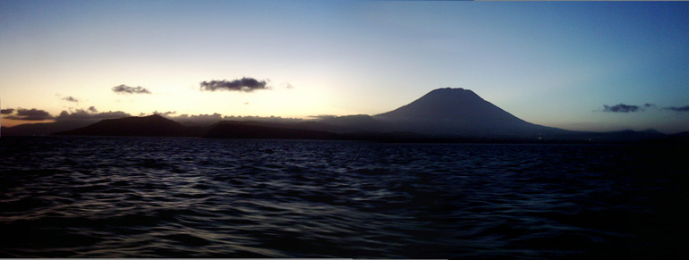

| Bali
Sent 4 August |
 |
| back: Yogya |
Agung, the sacred mountain of Bali. |
Hi Folks,
=================================
Finally recuperating emotionally from the camera loss in Yogya. Was just unable
to be upbeat for eight days.
One of the things an overseas backpacker has to deal with is exchange rates and
currencies in each country he visits. Most countries will not deal with foreign
coin - even at the border. I'm now using my 6th currency since April. Think the
Asians will ever develop an Asian Euro? I'm starting to embed, rather than
attach photos. If this is a problem for anyone, I'll return to the old way. Just
let me know.
=================================
July 23 - 28, 2003
The bus from Yogya to Bali pulls into Denpasar about 6:30 AM to the normal hoard of drivers and touts. Fortunately, I had poled the 6 other backpackers just before arriving in Bali, and since we all wanted to go to Ubud, I suggested we pool our resources and hire a bemo (micro-bus). Typically, the drivers start off asking outrageous prices, and today was no different. "50,000 Rupiah each" ended up at 50,000 total for the six of us. The driver wasn't happy, and took his anger out on the bus. But the countryside was as fascinating as it always is in Bali, so soon distracted our attention. At our destination, 35 minutes later, I still gave the driver a tip, and I'm sure all of us did. But he still wanted more, but we refused.
By 8:30, I'm standing in the doorway of the Hai Homestay, my home last time in Bali. Besides the staff, the only change noted was the addition of an extension cord outlet and fan in "my" room. The former will make it easier to plug in the laptop. Oh, I also noted that many of the smaller streets now are blacktopped; it will mean less mud tracked into the bungalows and homes, especially in the rainy season. Wish I had a picture of my place and the surrounding gardens to send everyone.
 Walking down to the Pondok Pekak Library, few other changes were noted. This library was my favorite hangout last time, and it is still just as inviting, even though few guests were present. My first objective was to review a more detailed travel guide on the islands of Sumba and Nusa Penida and take lots of notes. Even made some sketches, as my guide contains no maps of Sumba, nor Penida. (To the right is a photo taken of the library in 1999.) And yes, the Sundanese album mentioned on the 1999 site which features flute and gamelan is still the most often heard recorded music in Ubud.
Walking down to the Pondok Pekak Library, few other changes were noted. This library was my favorite hangout last time, and it is still just as inviting, even though few guests were present. My first objective was to review a more detailed travel guide on the islands of Sumba and Nusa Penida and take lots of notes. Even made some sketches, as my guide contains no maps of Sumba, nor Penida. (To the right is a photo taken of the library in 1999.) And yes, the Sundanese album mentioned on the 1999 site which features flute and gamelan is still the most often heard recorded music in Ubud.
I spent the next few days healing. It didn't help when the next morning, a Japanese writer staying in the same homestay tells me his day sack, containing his laptop, was stolen from him yesterday while riding in Ubud. The entire draft of his new book -- gone! The thief was on a motorcycle and grabbed the sack from the bicycle basket, right in front of him. That reminds me, I got to burn some more pictures onto CD and send them home for safekeeping! (Only the first CD is now safe.)
On Friday I took local transportation to Denpasar to check out both Pelni passenger ship prices, and camera prices at a computer center in Rimo Mall, and some camera shops close by. Camera prices are around 50% higher than purchasing over the Internet in the USA. And accessories are about double. It was too late to purchase anything, and the banks were closed, so I hired a motorbike for my trip back to Ubud for 20,000 Rp.
The motorbike driver was very familiar with the back roads, so we went from village to village. It was wonderful, seeing that some traditions are alive and well in Bali. I saw dancers practicing, performers in costume, and heard many gamelan orchestras in the several villages, most of which are NOT on the tourist route. That experience means so much more than a hundred shops selling the arts and crafts of Bali. The latter is driven by profit, while tradition and expression drive the former.
One of my new friends runs an Internet café in Ubud, not far from my home. I ask him where to purchase a used camera. Although he can not direct me to a used camera store, he does tell me about Rimo Mall in Denpasar, and that his friend is a camera distributor. His prices appear to be 10% lower than Rimo mall, but unfortunately, he does not carry the lower end models. Besides, takes 3 - 5 days to receive, and I want to leave Monday. I thank him, but tell him they are just out of my price range. He was overjoyed to borrow my CD of Adobe Suite 2020. . . .
Food is as good in Bali as anywhere else in Southeast Asia. Even the small roadside vendor variety is pleasant, as long as you don't eat it for weeks on end. Saturday I wanted something different, so walked down to the French Organic place down at the beginning of the street. One other person is in the 2nd floor restaurant, which overlooks two dull streets below. Most entrees were running 33,000 Rp, about three times my normal expense, so I ordered something curry-exotic. I got what I expected - fantastic food and I still don't know what I ate. The most recognizable items besides rice were the cashews on top. By the time I finished my delicious meal, I had made friends with another guest, a history teacher from Holland. We had a marvelous discussion on travel, history, and Dutch/American politics. He echoed what most travelers say: Just where are these weapons of mass destruction that Iraq "possessed" according to all the wonderful American Intelligence? Or was this just a ploy by Bush to get the oil from Iraq, and avenge his father's mistakes? It appears that the only country with massive amounts of these weapons is the USA. Then it was time to call it a night. Most tables in the restaurant were now full, with Balinese as well as Westerners - My new friend and I apparently just beat the crowd.
Monday morning starts with a trip to the Bank to get a cash advance for the next two weeks and hopefully enough to buy a camera. Requested 3.5 million Rupiah, but the bank tells me they have a limit of 2.5 million Rupiah per day. Guess I have to make another stop, and hope a "hold" is not placed on my account for "abnormal usage."
I've hired a motorbike driver for the morning, 30,000Rp. First to Denpasar's, Rimo Mall. The vendor that quoted me the best prices has not opened yet. Bought the motorbike driver a soft drink, as he was just sitting and waiting patiently for me. Walked up the street to the camera store I visited Friday; now prices were inflated. Returned to Rimo Mall and bought the cheapest digital camera offered:(1,000,000 Rp after bargaining.) None of the open stores had AAA rechargeable batteries in stock, so I'll have to get by with Alkaline. Then to Benoa Port, where I bought Pelni ticket to Waingapu, Sumba for 163,000 Rp. Gave the motorbike driver a 33% tip, as he dropped me at the Pelni port.
Read camera instruction manual while eating lunch and waiting for Pelni ship show time. Met a couple from Bali that is moving to Ende, Flores where they are opening a restaurant serving Balinese food. They ask me to be sure and stop in when I get there.
Left Bali for Waingapu, Sumba on Pelni's Awu, one of the same ships I used in 1999. Above is my only photo of Bali on this trip, from my cheap new camera. That's the sacred Agung Mountain, a fitting farewell to Bali.
Enjoy your life -- it's the only one you've got. I certainly am!
Bill